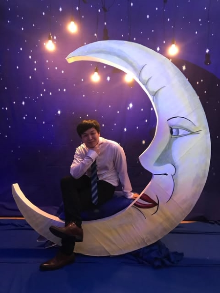
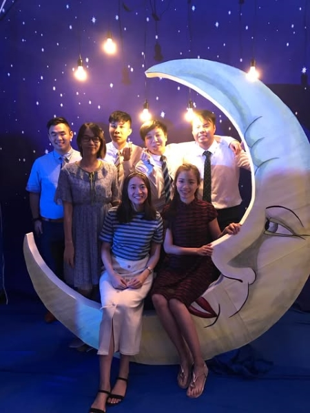
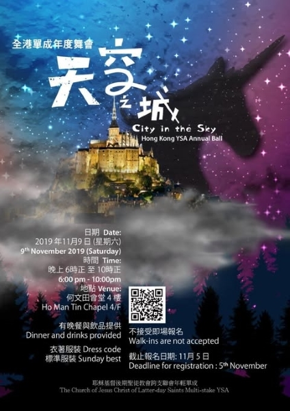
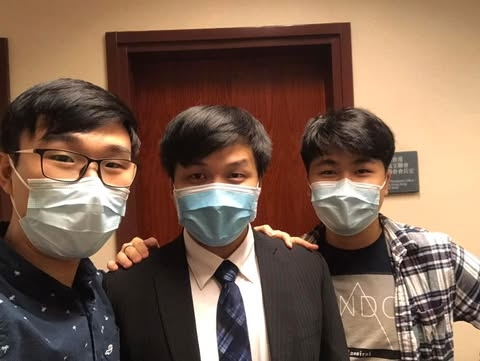

After I visited the State, I met with missionaries and talk about Jesus Christ and family. I got baptisted a month later.
They are the missionaries who tauch me about the God. Also on the left is my Bishop.
First time to be in YSA conference in Hong Kong. We perfored a dance for the audience during dance night praty.
This is the YSA activity to go hike together. After the hike we went to crab lunch.
The second dance party had much fun in the event.
A few month later I was a host of YSA annual ball, I invited some of my friends in the church help me for the event.
The first picture that I took when I set apart to be a missionary with my younger brother and a church's friend.
The picture that my last day to be a missionary. We had a dinner with the president and the missionaries who will be home together at the same time.